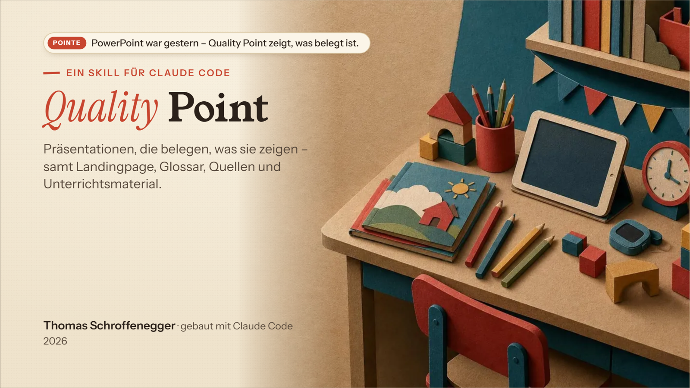
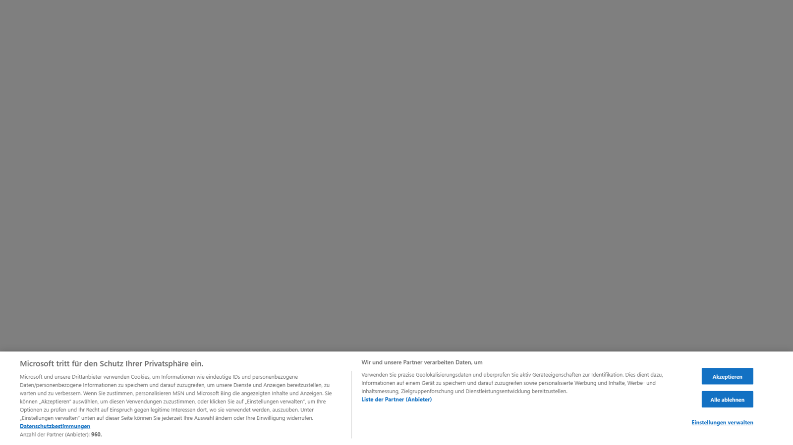
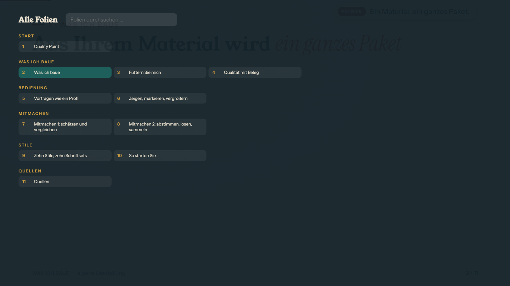
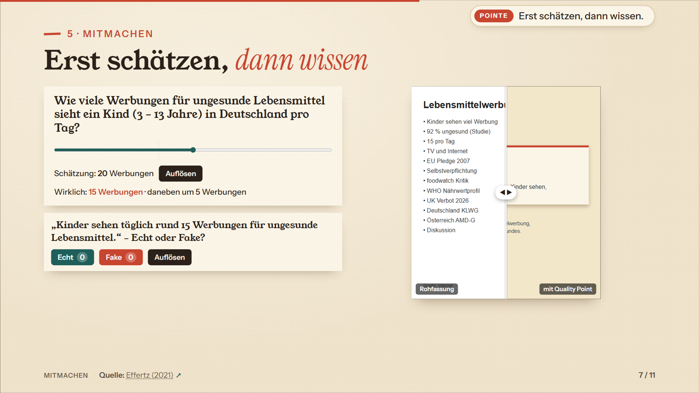

Quality Point · Einrichtung
Einstellen, was entstehen soll.
Alles ist voreingestellt. Du kannst unten sofort „Standard übernehmen“ drücken – oder in Ruhe durch die Abschnitte gehen: Jede Wahl ist erklärt, Stile und Beispiele sind zu sehen. Am Ende bekommst du einen Code für den Chat oder eine Datei für den Projektordner. Die Seite speichert nichts im Netz; was du einträgst, bleibt auf diesem Gerät.
1Hier einstellenoder Standard übernehmen
2Code in den ChatClaude liest ihn und fragt nur, was fehlt
3Gliederung freigebendie einzige Rückfrage danach
4Claude bautFolien, Seiten, Material – geprüft, mit Quellen




✓Fertig
Code oder Datei an Claude
Weg 1 · Code in den Chat (empfohlen)„Code kopieren“ drücken und im Chat einfügen, z. B. „Bau mir die Präsentation, hier die Einrichtung: QP1…“. Claude liest alles daraus und fragt nur nach, was fehlt.
Weg 2 · Datei speichern„Datei speichern“ lädt
quality_point.json herunter. Die Datei in den Projektordner legen (oder Claude sagen, wo sie liegt).Dein Code
Der Code enthält nur, was auf dieser Seite steht – keine Schlüssel, keine Dateien.